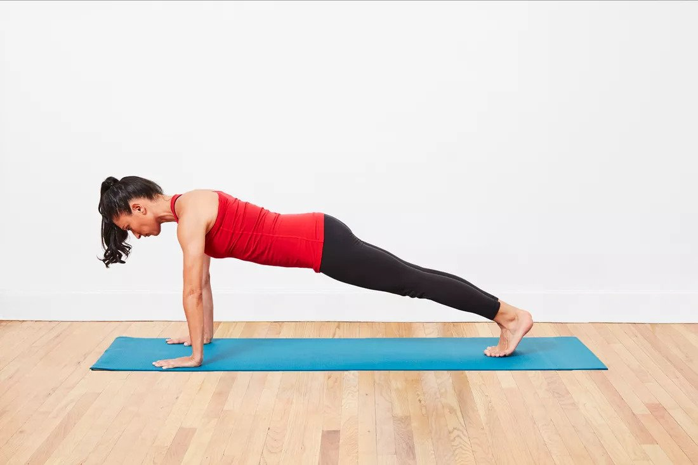
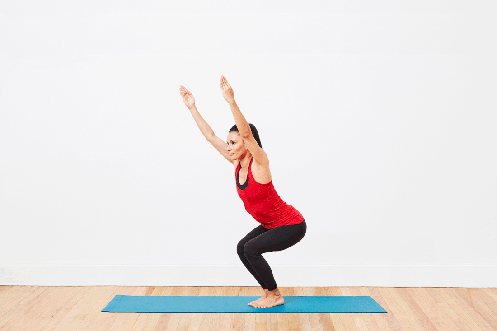
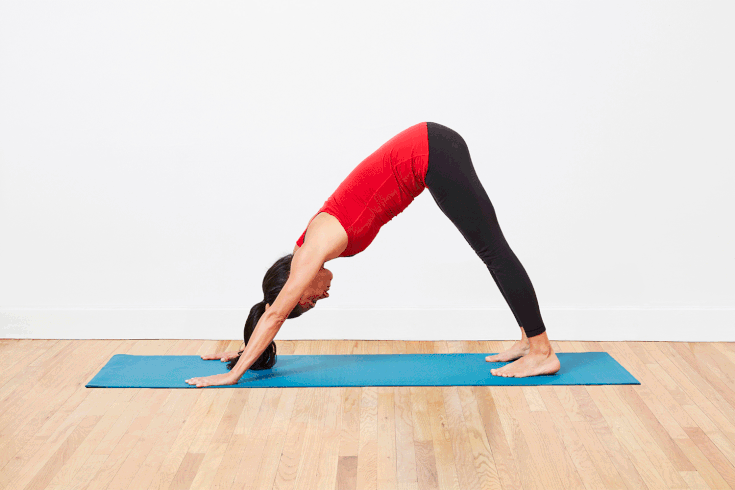
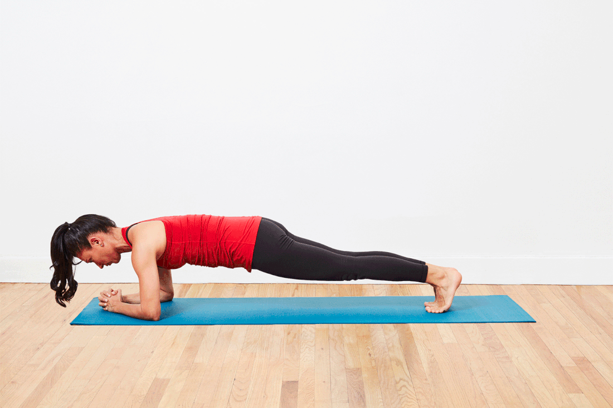

Yoga For Strength Building
These yoga poses will focus on enhancing physical strength required for everyday activities.
1 Plank

- Lie down on your stomach.
- Bring your hands towards your shoulders, keeping your palms on the ground.
- Now, as you breathe in, push up your body forming a straight line. The arms are perpendicular to the ground and shoulders are right over your wrists, while the body is parallel to the floor.
- Hold the pose and continue breathing.
- As you exhale, come back to a sitting position and relax.
2 Downward Dog Split

- On an inhale, raise your right leg off the ground behind you.
- Keep your hips level with one another as you lift the right leg. The hips should stay squared with the floor.
- Continue releasing the left heel toward the floor. Try to keep an equal amount of weight in both your arms.
- Extend through the raised right heel and the crown of your head.
- After holding the pose with the hips squared for several breaths, you can open the right hip, stacking it over the left hip. This will allow the right leg to come higher and give you a nice hip stretch. Although you are opening the hips, try to keep the torso from twisting to the left.
- In the open hips position, you can bend the right knee and let the right heel come toward your left buttock.
- After several breaths, straighten the right leg and re-square your hips toward the floor.
- Release the right foot back to the floor. Take several breaths in downward dog and then repeat the sequence on the left side.
3 Awkward Chair

- Bend your knees until the thighs are almost parallel to the floor. The feet should be parallel. If your feet are touching, keep your knees together. If your feet are slightly separated, that's OK but make sure your knees are separated the same amount.
- Brush your fingertips against the floor to make sure that you are getting really low.
- Keep your knees bent and your butt low as you lift your arms up.
- Hold for 5 to 10 breaths.
- To release, inhale and straighten your legs, lifting your body up through your arms.
- Exhale and return to standing position.
4 Dolphin Pose

- Come onto your hands and knees (all fours). Place your forearms on the floor, your elbows directly under your shoulders. You can either place the palms of your hands down with your forearms parallel with each other or interlace your fingers, tucking the bottom little finger in.
- As you exhale, curl your toes under. Engage your lower belly and lift your knees away from the floor
- Lift your sitting bones up and lengthen the tailbone as you straighten your legs and lower the heels towards the floor – they do not need to touch the floor.
- Engage your thigh muscles and keep the lower belly drawn in, press the forearms actively into the floor.
- Firm your shoulder blades down onto your back while maintaining space between them. Lengthen your spine. Hold your head between your arms, off the floor.
- Stay for 5 to 20 breaths.
- To come out of the pose, allow your knees to come back onto the floor as you exhale and rest in Child’s Pose.
5 Dolphin Push-Ups

- Move your forearms to a V position so that you can interlace your fingers the way you would in preparation for a Headstand. This gives you a little more traction as you begin to move, but you can also leave the hands separate and arms parallel if you prefe
- Move your torso forward so that your face comes over your hands, while inhaling. The elbows will be lined up under your shoulders. Keep your body straight as you would in a plank position. In fact, this is basically a forearm plank with the hands clasped.
- Push the hips back to Dolphin while exhaling. This is the basic back and forth motion of the Dolphin Pushup.
- Try to do 10 reps, moving the torso forward to a plank position on the inhale and pushing your hips back to dolphin on the exhale.
- When your set is complete, come down and rest in Child's Pose. Depending on your stamina, you could try to go for one or two more sets of 10. If that's not possible yet, work up to it.
6 Tree Pose

- Take a moment to feel both your feet root into the floor with your weight distributed equally on all four corners of each foot.
- Begin to shift your weight into your right foot, lifting your left foot off the floor. Keep your right leg straight but don't lock the knee.
- Bend your left knee and bring the sole of your left foot high onto your inner right thigh.
- Press your foot into your thigh and your thigh back into your foot with equal pressure. This will help you keep both hips squared toward the front so your right hip doesn't jut out.
- Focus your gaze on something that doesn't move to help you keep your balance.
- Take 5 to 10 breaths, then lower your left foot to the floor and do the other side.
Load More